[TOC]
Create a Web API with C# DataStore
This tutorial demonstrates the basics of creating, in SnapDevelop, a Web API with ASP.NET Core that will use C# DataStore as its data manipulation component.
In this tutorial, you will learn to:
- Create a Web API project
- Test the API
- Add a database context
- Register the database context
- Add a C# DataStore Model
- Add a Service
- Perform CRUD operations using the Web API
- Call the Web API from PowerBuilder.
Prerequisites
- SnapDevelop 1.0
- Sample database setup
- Download the database backup file from https://github.com/Microsoft/sql-server-samples/releases/download/adventureworks/AdventureWorks2012.bak.
- Install SQL Server Express or SQL Server if it is not installed.
- Restore database using the downloaded database backup file.
Create a Web API project
Start SnapDevelop and select Create New Project from the Start page. Or, from the File menu, select New and then Project....
In the New Project dialog, select .NET Core, and in the list of project templates, select ASP.NET Core Web API. Name the project "WebAPI1", name the solution "WebAPI DS Tutorial" and click Ok.
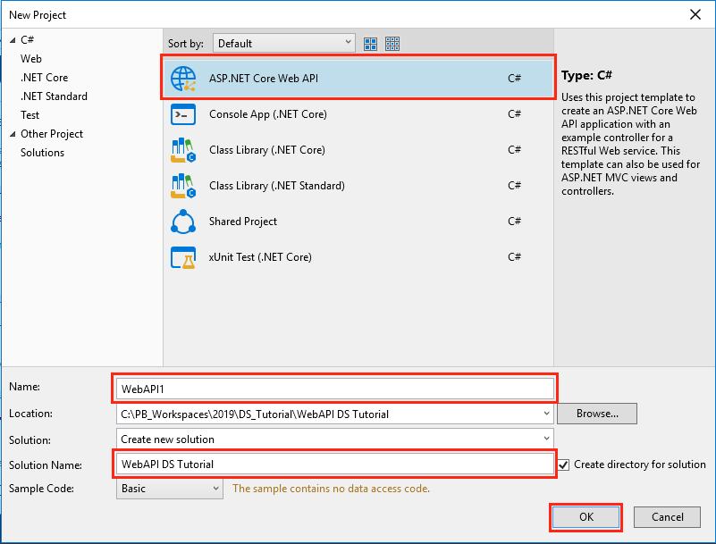
Test the Web API
The project template creates a sample Web API. Call the GET HTTP verb from a browser to test the app.
Press Ctrl+F5 to run the app. SnapDevelop launches a browser and navigates to http://localhost:5000/api/sample.
If it's the first time to run you may need to wait several seconds for initiating .NET runtime after the browser launched.
The following JSON is returned:
["value1","value2"]
Add a database context
The database context is the class that manages database connections and transactions. This class is created by deriving from the SnapObjects.Data.DataContext class.
Right-click the WebAPI1 project and select Add > New Item.... In the item template list select DataContext and Name the class DataContext1.cs and click OK.
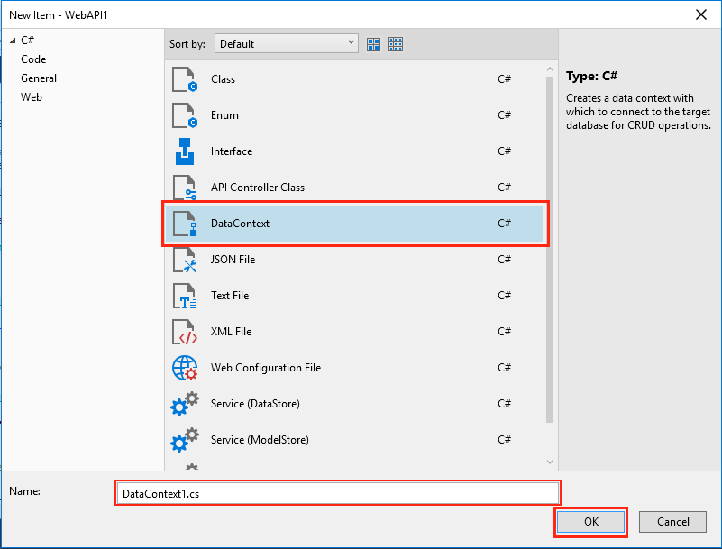
In the DataContext Wizard dialog, click New Connection.
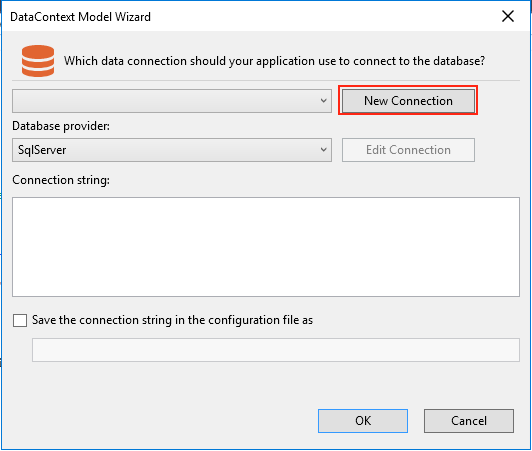
In the Connection Properties dialog, fill in database connection information and click OK.
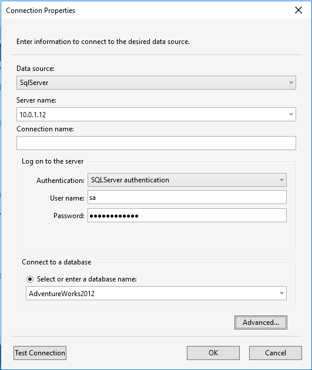
Then back to the DataContext Wizard dialog, Connection String is generated by the Connection Properties dialog, click OK.
The Connection String is saved in appsettings.json and the DataContext1 class is created.
Register the database context
In ASP.NET Core, services such as the DataContext must be registered with the dependency injection (DI) container. The container provides the service to controllers.
Update Startup.cs according to the comments:
// Uncomment the following line to connect to the SQL server database.
// Note: Replace "ContextName" with the configured context name; replace "key" with the database connection name that exists in appsettings.json. The sample code is as follows:
services.AddDataContext<DataContext1>(m => m.UseSqlServer(Configuration["ConnectionStrings:AdventureWorks2012"]));
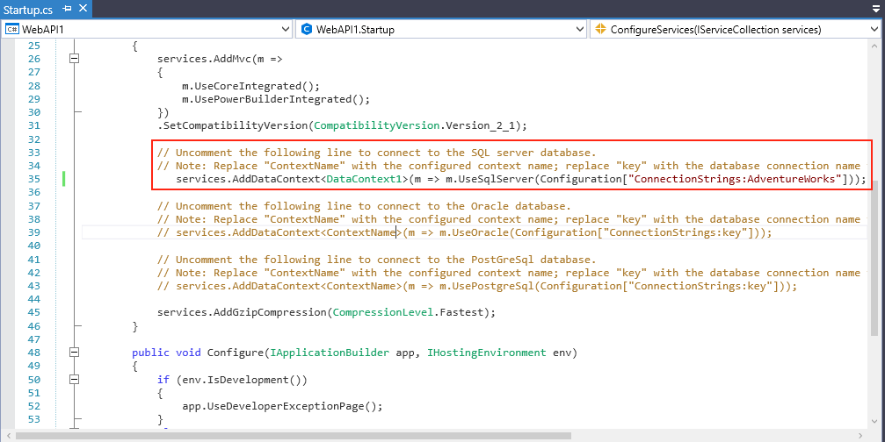
Add a C# DataStore Model
C# DataStore is a .NET version of the native PowerBuilder DataStore. It provides almost the same set of APIs as the native PowerBuilder DataStore. A C# DataStore is created using PowerBuilder's DataWindow Designer.
Create a DataObject in the PowerBuilder IDE
Start PowerBuilder and create a template application with no database connection. Then add a new Grid DataWindow, using the DataWindow Designer, that maps to the table: HumanResources.Department. Add a retrieval argument named departmentId that will be used in the SQL WHERE clause to filter by DepartmentID. Save the DataObject with the name d_department.
Generate the C# Data Model
Right-click on the new DataObject from PowerBuilder's System Tree. Click on Generate Data Models (C#).
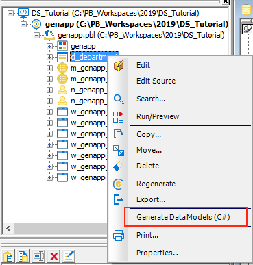
On the Database Connection popup window click on Ok.
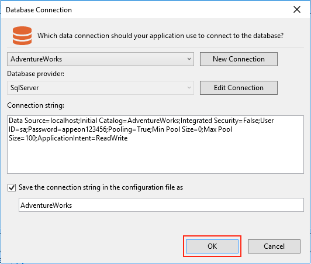
In the C# Editor window click on Model Export.
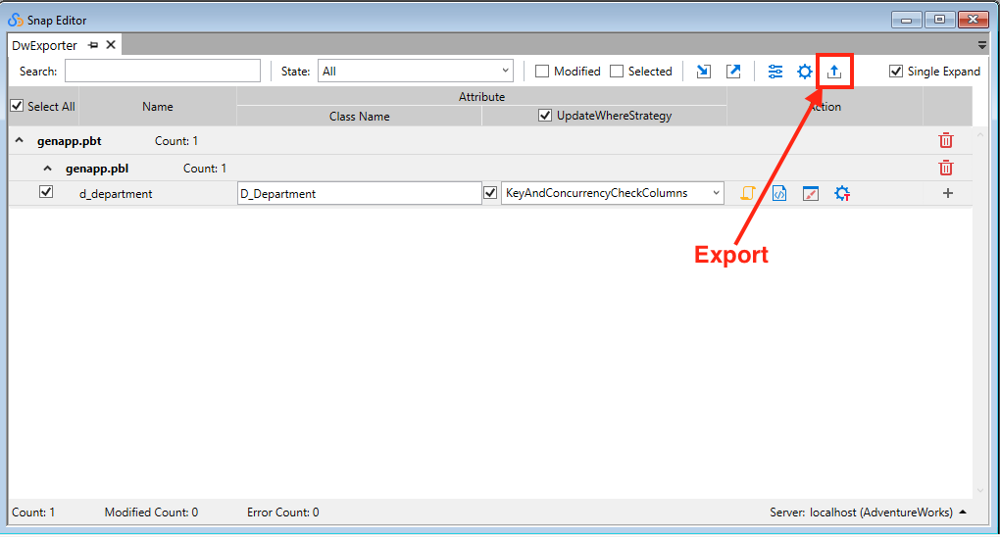
On the DataWindow Export popup window select the project by clicking in Browse and then click on Export.
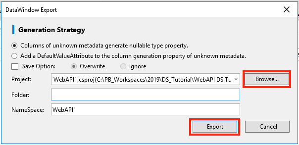
Back on SnapDevelop, Click on Sync with Active Document to refresh the files and folders.
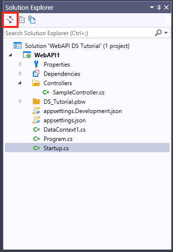
Your C# DataStore Model and DataObject have been created in a new folder.
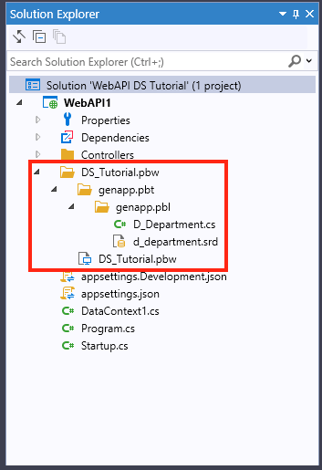
Add a Service
A service is a component that's intended for common consumption in an app and commonly implements an interface. This is where you develop the bussiness logic of your Web API.
The interface contains only the declaration of the methods, properties and events, but not the implementation.
Right-click on the Web API Project. Then click Add > New Folder. Name it Services. Now add a sub-folder to it and name it Impl. Next, Right-click on that folder and click on Add > Interface.
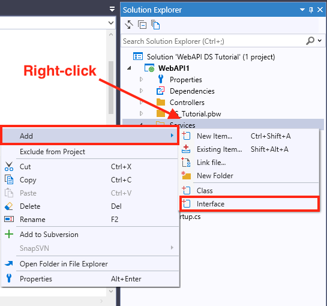
Name it as IDepartmentService.cs and click Ok.

Add the declaration of the methods we will implement on the service.

To add the Service right-click on the Service > Impl sub-folder and click on Add > Class. Name it DepartmentService.cs and click Ok. (Notice the difference between the name of the interface "IDepartmentService.cs" and the name of the service "DepartmentService.cs")
In ASP.NET Core, services such as the DepartmentService must be registered with the dependency injection (DI) container. The container provides the service to controllers.
Update Startup.cs according to the comments:
// The service needs to be registered in the ConfigureServices method of the Startup class. Sample code as follows:
// services.AddScoped<IDepartmentService1Service, DepartmentService1Service>();
services.AddScoped<IDepartmentService1Service, DepartmentService1Service>();
Perform CRUD operations using the Web API
Since the C# DataStore and PowerBuilder's DataStore are essentially the same, you perform CRUD operations virtually the same in the Web API.
The Web API requires one more component called Controller. A default Controller was created when you created the Web API project; but you can also create a new one by right-clicking on the Controllers folder, then click on Add -> New Item -> API Controller Class.
A controller determines what response to send back to a user when a client makes an HTTP request.
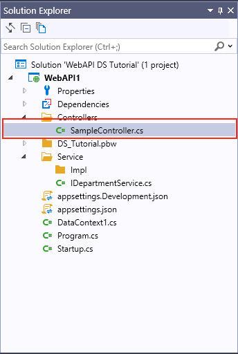
Retrieve the C# DataStore
To retrieve data from the C# DataStore we will use the RetrieveOne() method declared in the Interface.
RetrieveOne() method in the Service
Create an instance of DataStore using specified DataObject and DataContext, then call the DataStore's Retrieve method to retrieve data.
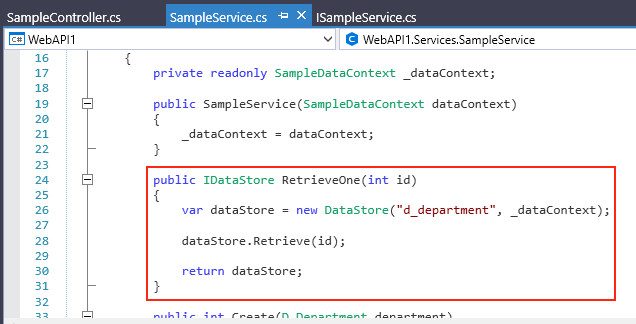
RetrieveOne() method in the Controller
The RetrieveOne() method is called by the client using the HTTP verb GET. It accepts an integer value that corresponds to the actual department id to retrieve, produces a response type 404 if the id was not found and returns the retrieved row in JSON format.
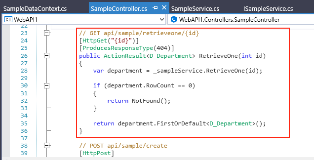
The project template creates a sample Web API and we have added a retrieveone method. Press Ctrl+F5 to run the app. SnapDevelop launches a browser and navigates to http://localhost:5000/api/sample/retrieveone/1.
The last digit on the url is the actual department id to retrieve. Change the url's last digit: http://localhost:5000/api/smaple/retrieveone/6 and Refresh the browser.
The following JSON is returned:
{"departmentId":6,"name":"Research and Development","groupName":"Research and Development","modifiedDate":"2008-04-30T00:00:00"}
Create/Insert a new row into the C# DataStore
To insert data into the C# DataStore we will use the Create() method declared in the Interface.
Create() method in the Service
Create an instance of DataStore using specified DataObject and DataContext, then call the DataStore's AddRow() method, passing the DataStore to it, and call the Update() method to insert the data into the DataBase. Return the number of rows affected if it succeeds.
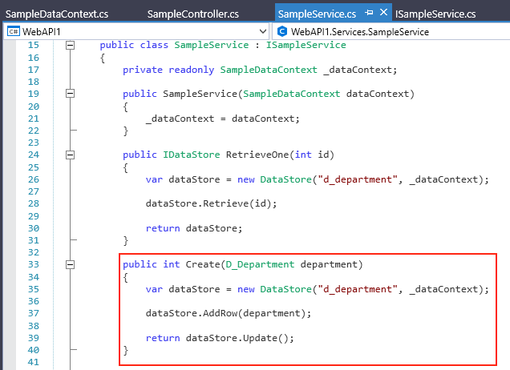
Create() method in the Controller
The Create() method is called by the client using the HTTP verb POST. It accepts a DataStore that corresponds to the actual department table to update, and produces a response type 201 with the url of the retrieveone method and the new department Id. If an internal server error occurred it produces a response type 500.
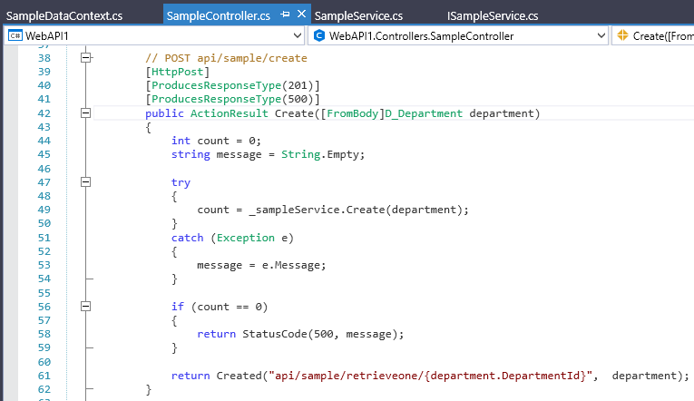
The project template creates a sample Web API and we have added a create method. Press Ctrl+F5 to run the app. SnapDevelop launches a browser and navigates to http://localhost:5000/api/sample/retrieveone/1.
To consume this method of the Web API, change the url: http://localhost:5000/api/smaple/create and call it with your client application passing in the body of the request the JSON containing the row you want to Create/Insert. (To learn how to call this method from PowerBuilder, refer to the following tutorial: Call the Web API from PowerBuilder)
Update changes into the C# DataStore
To insert data into the C# DataStore we will use the Update() method declared in the Interface.
Update() method in the Service
Create an instance of DataStore using specified DataObject and DataContext, then call the DataStore's Update() method to update the data from the database. Return the number of rows affected if it succeeds.
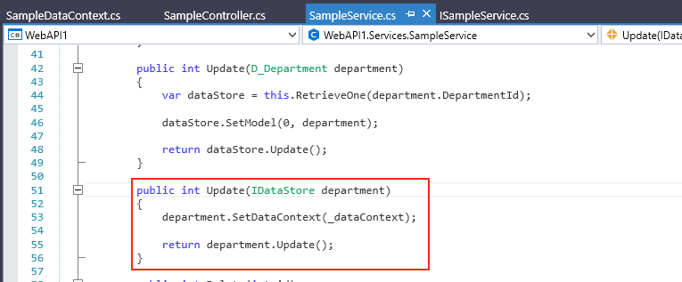
Update() method in the Controller
The Update() method is called by the client using the HTTP verb POST. It accepts a DataStore that corresponds to the actual department table to update, and produces a response type 201 if the update was successful. If an internal server error occured it produces a response type 500.
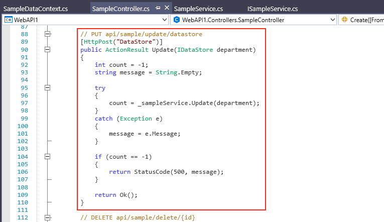
The project template creates a sample Web API and we have added an update method. Press Ctrl+F5 to run the app. SnapDevelop launches a browser and navigates to http://localhost:5000/api/sample/retrieveone/1.
To consume this method of the Web API, change the url: http://localhost:5000/api/smaple/update and call it with your client application passing in the JSON containing the rows you want to Update. (To learn how to call this method from PowerBuilder, refer to the following tutorial: Call the Web API from PowerBuilder)
Delete changes from the C# DataStore
To delete data from the C# DataStore we will use the Delete() method declared in the Interface.
Delete() method in the Service
Create an instance of DataStore by using the return value of a call to the RetrieveOne() method from this Service to get the row to delete. Use the DeleteRow()function from the DataStore and update the changes. Return the number of rows affected if it succeeds.
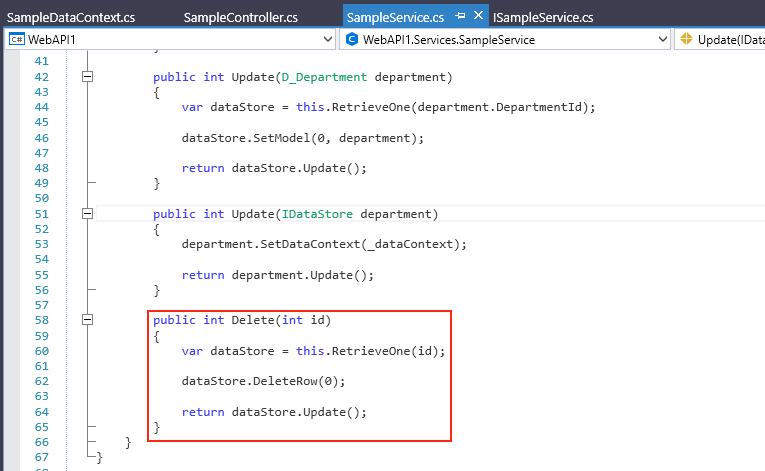
Delete() method in the Controller
The Delete() method is called by the client using the HTTP verb DELETE. It accepts an integer value that corresponds to the actual department id to delete, and produces a response type 201 if the delete was successful. If an internal server error occured it produces a response type 500.
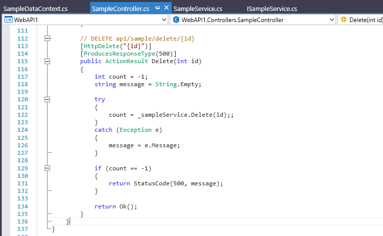
The project template creates a sample Web API and we have added a delete method. Press Ctrl+F5 to run the app. SnapDevelop launches a browser and navigates to http://localhost:5000/api/sample/retrieveone/1.
To consume this method of the Web API, change the url: http://localhost:5000/api/smaple/delete/ and call it with your client application passing in the department id you want to delete. (To learn how to call this method from PowerBuilder, refer to the following tutorial: Call the Web API from PowerBuilder)
Call the Web API from PowerBuilder
Add the JSON DataWindow
A JSON DataWindow is a traditional DataWindow that has a Web API as its DataSource. You use the same functionalities on the client-side, but the data manipulation is done on the Web API server-side.
Start PowerBuilder and using the template application created at “Create a DataObject in PowerBuilder IDE”. Put a Datawindow control on a sheet window. Set the DataObject to “d_department”. And add a button for each CRUD operation.
Retrieve the JSON DataWindow
The RESTClient object provides the ability to access the RESTful Web APIs. It can load the JSON-formatted string returned from the RESTful Web Service APIs into the DataWindow object.
To retrieve a JSON DataWindow you first need to instantiate the RESTClient object. Add an instance variable of the RESTClient object.
RESTClient inv_RestClient
On the Open event of your window, create the object variable.
// Create the RESTClient object variable
inv_RestClient = CREATE RESTClient
// Set the Request Headers to accept GZIP compression
inv_RestClient.SetRequestHeader("Accept-Encoding", "gzip")
On the source code window of your Retrieve button, add the RESTClient.RetrieveOne() function to call your Web API and load it directly into your DataWindow. (If you intend to Retrieve more than one row, use RESTClient.Retrieve() instead)
// Retrieve the DW using the RESTClient
inv_RestClient.RetrieveOne(dw_department, "http://localhost:5000/api/sample/retrieveone/1")
Run your application. Press Ctrl+R. Click on the Retrieve button. (Note: Your Web API needs to be running)
Insert/Update and Delete data using the Web API
On the source code window of your Insert/Update and Delete buttons, add the RESTClient.Submit() function to call your Web API and load it directly into your DataWindow. The Submit function calls the Web API using the HTTP verb POST. It automatically exports the DataWindow JSON, as well as all of it's Buffers, and sends only the changed rows to the Web API.
Insert
// Insert data into the JSON DataWindow with the RESTClient
inv_RestClient.Submit("http://localhost:5000/api/sample/create", ls_response, dw_department)
Update
// Update data from the JSON DataWindow with the RESTClient
inv_RestClient.Submit("http://localhost:5000/api/sample/update", ls_response, dw_department)
Delete
// Delete data from the JSON DataWindow with the RESTClient
inv_RestClient.Submit("http://localhost:5000/api/sample/update", ls_response, dw_department)
Run your application. Press Ctrl+R. Click on the Retrieve button. (Note: Your Web API needs to be running)